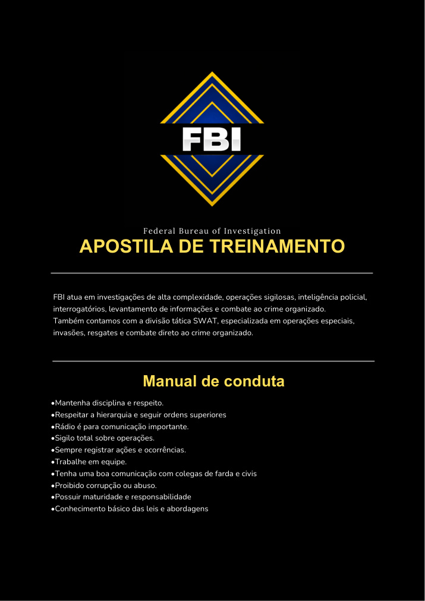
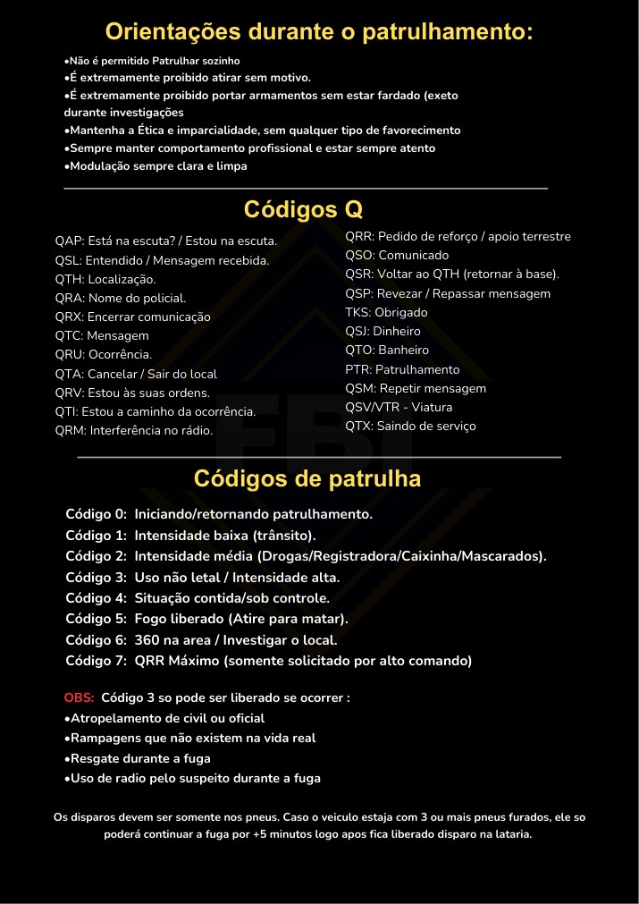
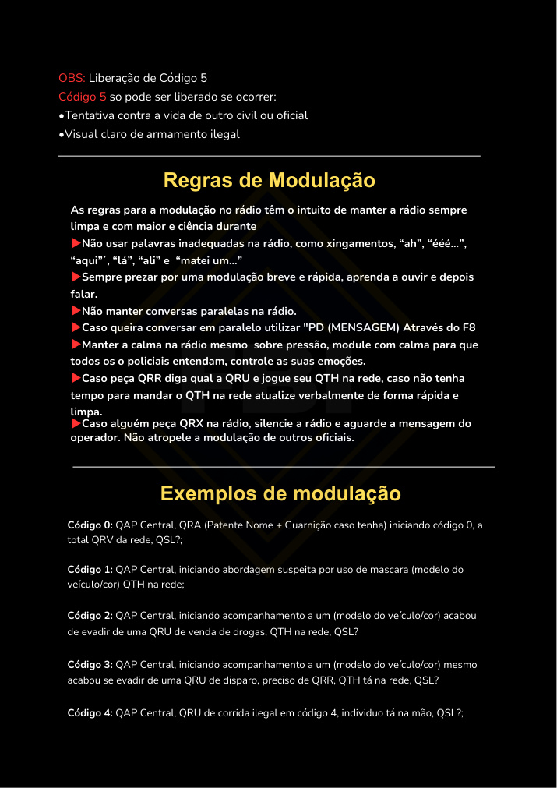
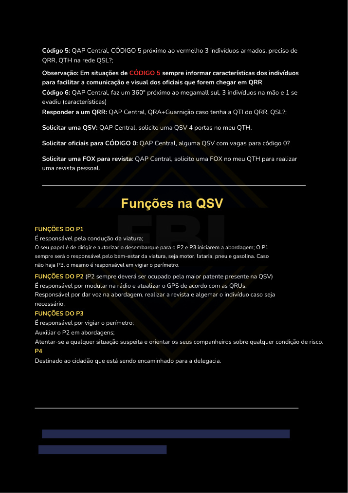
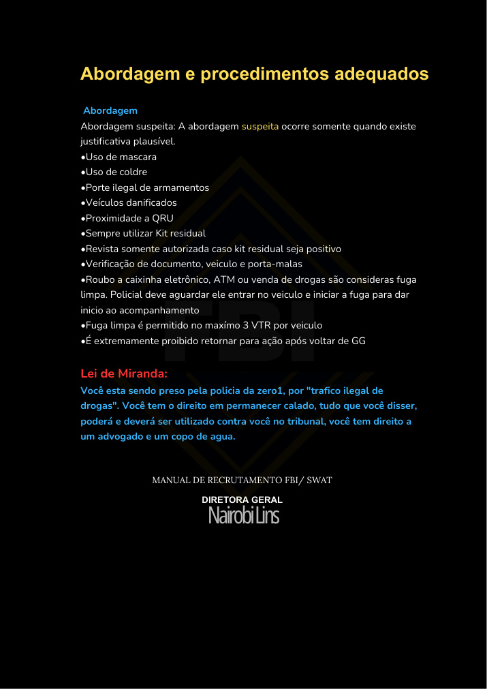

Disciplina
Mantenha disciplina, respeito e postura profissional.
Federal Bureau of Investigation
Site completo de estudo com conteúdo do manual: conduta, patrulhamento, códigos Q, códigos de patrulha, modulação, funções na QSV, abordagem, procedimentos e Lei de Miranda.
O FBI atua em investigações de alta complexidade, operações sigilosas, inteligência policial, interrogatórios, levantamento de informações e combate ao crime organizado. A divisão SWAT é especializada em operações especiais, invasões, resgates e combate direto ao crime organizado.
Mantenha disciplina, respeito e postura profissional.
Respeite a hierarquia e siga ordens superiores.
Rádio deve ser usado apenas para comunicação importante.
Operações devem ser tratadas com sigilo total.
Sempre registre ações, ocorrências e informações relevantes.
Trabalhe em equipe e mantenha boa comunicação com civis e colegas.
É proibido corrupção, abuso de poder ou favorecimento.
Possuir maturidade, responsabilidade e conhecimento básico das leis.
| Código | Significado |
|---|---|
| QAP | Está na escuta? / Estou na escuta. |
| QSL | Entendido / Mensagem recebida. |
| QTH | Localização. |
| QRA | Nome do policial. |
| QRX | Encerrar comunicação. |
| QTC | Mensagem. |
| QRU | Ocorrência. |
| QTA | Cancelar / Sair do local. |
| QRV | Estou às suas ordens. |
| QTI | Estou a caminho da ocorrência. |
| QRM | Interferência no rádio. |
| QRR | Pedido de reforço / apoio terrestre. |
| QSO | Comunicado. |
| QSR | Voltar ao QTH / retornar à base. |
| QSP | Revezar / Repassar mensagem. |
| TKS | Obrigado. |
| QSJ | Dinheiro. |
| QTO | Banheiro. |
| PTR | Patrulhamento. |
| QSM | Repetir mensagem. |
| QSV / VTR | Viatura. |
| QTX | Saindo de serviço. |
Iniciando ou retornando patrulhamento.
Intensidade baixa, trânsito ou abordagem inicial.
Intensidade média: drogas, registradora, caixinha ou mascarados.
Uso não letal / intensidade alta.
Situação contida ou sob controle.
Fogo liberado. Somente em caso extremo.
360° na área / investigar o local.
QRR máximo, solicitado apenas por alto comando.
Permitida em casos de atropelamento de civil ou oficial, rampagens irreais, resgate durante fuga ou uso de rádio pelo suspeito durante fuga.
Somente em tentativa contra a vida de civil/oficial ou visual claro de armamento ilegal.
Código 0: QAP Central, QRA, patente e nome iniciando código 0, total QRV da rede, QSL?
Código 1: QAP Central, iniciando abordagem suspeita por uso de máscara, modelo/cor do veículo, QTH na rede.
Código 2: QAP Central, acompanhamento a veículo evadido de QRU de venda de drogas, QTH na rede, QSL?
Código 3: QAP Central, acompanhamento a veículo evadido de QRU de disparo, preciso de QRR, QTH na rede, QSL?
Código 4: QAP Central, QRU em código 4, indivíduo na mão, QSL?
Código 5: QAP Central, Código 5 próximo ao local, indivíduos armados, preciso de QRR, QTH na rede, QSL?
Conduz a viatura, autoriza desembarque, cuida do motor, lataria, pneus e gasolina. Se não houver P3, vigia o perímetro.
Maior patente presente. Modula na rádio, atualiza GPS, dá voz, revista e algema quando necessário.
Vigia perímetro, auxilia o P2 e alerta a guarnição sobre riscos.
Destinado ao cidadão conduzido para a delegacia.
Responder QRR: QAP Central, QRA + guarnição a QTI do QRR, QSL?
Solicitar QSV: QAP Central, solicito uma QSV 4 portas no meu QTH.
Solicitar oficiais para Código 0: QAP Central, alguma QSV com vagas para Código 0?
Solicitar FOX: QAP Central, solicito uma FOX no meu QTH para realizar revista pessoal.
A abordagem suspeita só ocorre quando existe justificativa plausível.
Uso de máscara, uso de coldre, porte ilegal de armas, veículos danificados e proximidade a QRU.
Sempre utilizar kit residual. Revista só é autorizada se o kit residual for positivo.
Verifique documento, veículo e porta-malas dentro do procedimento adequado.
Roubo a caixinha, ATM ou venda de drogas são fuga limpa; aguarde o suspeito entrar no veículo para iniciar acompanhamento.
Fuga limpa permite no máximo 3 VTR por veículo.
É proibido retornar para ação após voltar de GG.
Você está sendo preso pela polícia, pelo motivo informado pelo oficial. Você tem o direito de permanecer calado. Tudo que disser poderá e deverá ser utilizado contra você no tribunal. Você tem direito a um advogado e a um copo de água.
Páginas renderizadas do PDF enviado para consulta visual.




